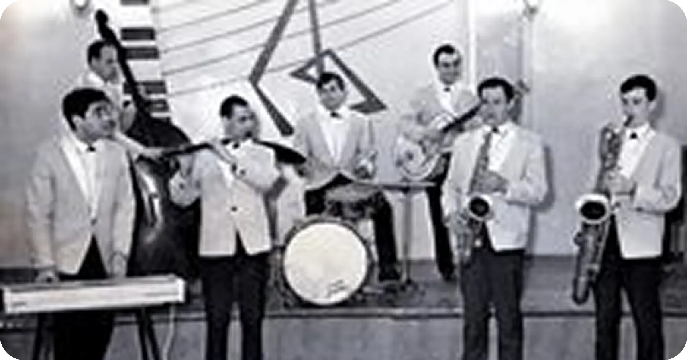
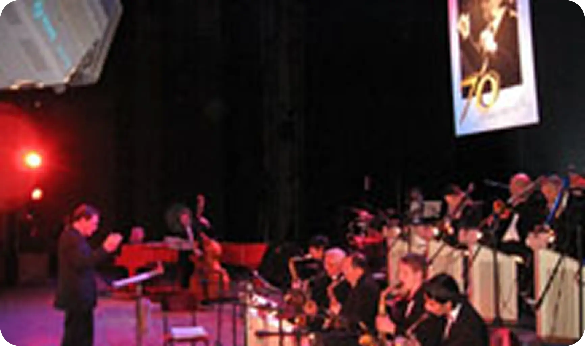

Муниципальный джаз-оркестр носит имя первого в России профессора джаза Кима Назаретова. История этого коллектива началась в 1963 году. Именно тогда Ким Аведикович, вернувшись по окончании Харьковской консерватории, собирает оркестр джазового типа. Долгое время коллектив скитался по различным ДК и кинотеатрам.
В 1965-1966 году ВИА К. Назаретова работал в ДК «Энергетик», где выступали с концертами и устраивали танцевальные вечера. Комната музыкантов находилась глубоко в подвале, там проходили самые знаменитые ночные ДЖЕМ СЕШНЫ, куда приходили все музыканты города и области и все музыканты, находящиеся на гастролях в это время в г. Ростове.

За три года работы джаз-оркестра «Орбита» в нем работали музыканты: Юрий Штерн — баритон-саксофон, Всеволод Клименко — контрабас, костяк оркестра, друзья Кима ещё по Харьковской консерватории, Эдуард Бахман — тенор-саксофон, Татьяна Тумбулова — выдающаяся пианистка, исполнительница классических и джазовых произведений, любимая ученица Кима Аведиковича, Карп Деланьян — альт-саксофон, Владимир Попов — альт-саксофон, Евгений Гнездилов — тенор-саксофон, кларнет, Анатолий Иванов — тенор-саксофон, Анатолий Пискунов — труба, Юрий Пашков — труба, Валентин Шамов — тромбон, Евгений Барков — альт-саксофон, В. Ерёмин — альт-саксофон, Владимир Архипов — тенор-саксофон, Борис Арзуманов — гитара, Виктория Беляева, Александр Запечнов — вокал. Юрий Лисицкий — барабанщик, инспектор оркестра и заместитель К. Назаретова по административной работе. Также за это время в оркестре эпизодически работали Эдуард Эскин — фортепиано, Георгий Агамалов — фортепиано, все программы вёл конферансье, впоследствии известный писатель-сатирик Альбер Левин.

Коллектив всегда открыт к самым разным творческим контактам. В разное время с ним выступали саксофонисты Георгий Гаранян (Москва) и Анатолий Вапиров (Варна, Болгария), мультиинструменталист Давид Голощёкин (Санкт-Петербург) и трубач Валерий Колесников (Донецк, Украина), тромбонист Виктор Бударин (Новосибирск) и гитарист Виктор Борилов (Ростов-на-Дону), певица Лариса Долина (Москва) и вокальный ансамбль «Гая» (Баку, Азербайджан), солисты легендарного джаз-оркестра Каунта Бэйси вокалисты Деннис Роуланд и Мэлба Джойс (США)…
С оркестром с удовольствием работают московские мэтры джаза народный артист Советского Союза Мурад Кажлаев и народный артист России Анатолий Кролл, одесский бэндлидер Николай Голощапов и немецкий Уве Плат. Более того! Ростовчане даже рискнули на создание Международного биг-бэнда «Ростов – Дортмунд», в который вошли немецкие музыканты из Джазовой Академии Глена Бушманна.
В составе Муниципального джаз-оркестра прекрасно уживаются корифеи отечественного джаза и учащиеся школы им. К. Назаретова, а в репертуаре не только джазовая классика, но и современные композиции, среди которых немало авторских.
arr. V.Borilov (Kim Nazaretov's Rostov-on-Don municipal big-band, solo guitar
- Victor Borilov, rec. 1989)
K.Nazaretov, fp., rec. 1964
Kim Nazaretov's Rostov-on-Don municipal big-band, solo tb - Yakov Kyulyan, rec. 1980
- Художественный руководитель и главный дирижёр — Юрий Кинус
- Музыкальный руководитель и дирижёр — Андрей Мачнев.
- Солисты-вокалисты оркестра:
- Лариса Гончарова Заслуженная артистка России,
- Лиза Кабоева Заслуженная артистка РСО-Алания,
- Марина Ткачишина,
- Константин Иорданиди,
- Алексей Котляров.
В 1966 году в Окружном Доме офицеров СКВО, г. Ростов-на-Дону, под патронажем командующего Северо-Кавказским военным округом генерала армии Плиева И.А. на профессиональной основе был создан джаз-оркестр «Орбита». Оркестр гастролировал по всей территории Северо-Кавказского военного округа, в частях всех родов войск. Постоянно давал концерты в дни праздников в г. Ростове-на-Дону. В Доме офицеров три раза в неделю устраивались танцевальные вечера. Давались выездные концерты на заводах и в колхозах страны, обслуживали (безвозмездно) все заседания и праздничные мероприятия советских и партийных органов. Неоднократно джаз-оркестр занимал первые и вторые места на ежегодных городских смотрах-конкурсах (в городе Ростове-на-Дону в эти годы было пять профессиональных биг-бэндов под руководством Кима Назаретова, Георгия Балаева, Леонтия Гасретова, Олега Ерёмина, Павла Ефремова, Леонида Блока).
С открытием в РУИ отделения эстрадной и джазовой музыки оркестр перешёл в училище и пополнился студентами. Но долгое время «творческим ядром» коллектива были преподаватели отделения – Заслуженный артист России В. Попов (as), Е. Гнездилов (ts), М. Радинский (tp), В. Кутов (tb), Н. Ионнисян (p), В. Костыленко (g), И. Егоров (d-b), М. Левин (dr).
За долгие годы Всероссийских и Международных конкурсов, фестивалей, гастролей по Советскому Союзу (Москва, Ленинград, Тбилиси, Ереван, Одесса, Донецк, Куйбышев, Ярославль, Саратов, Воронеж, Волгоград, Сочи, Кривой Рог, Ставрополь, Пермь…) и за рубежом (Шотландия, Польша, Германия, Греция) через оркестр прошло более 500 музыкантов. Сменялись и руководители: Ким Назаретов, Виктор Кутов, Юрий Кинус, несколько последних лет – в содружестве с Андреем Мачневым.
В марте 2001 года по приглашению заслуженного деятеля искусств России Владимира Фейертага джаз-оркестр Кима Назаретова п/у Юрия Кинуса удостоился чести выступить в московском Концертном зале им. П. Чайковского с программой «Ростов джазовый».
В дискографии коллектива 5 пластинок и 3 CD:
- «Джаз-84» (Москва),
- «Осенние ритмы-86» (Ленинград),
- «Осенние ритмы-88» (Ленинград),
- «Тбилиси-86»
- М.Кажлаев «Только ты» (1987),
- Джаз-оркестр Кима Назаретова (записи 1964 – 2001). RussianDisc. Москва, 2002.
- Fair(записи 1997 – 2003). Ростов-на-Дону, StudioA& JRecords. 2003.
- International big band. Dortmund/Germany – Rostov/Russia. Муниципальный джаз-оркестр К. Назаретова п/у Андрея Мачнева и биг-бэнд Джазовой академии Г. Бушманна п/у Уве Плата. LC 12198 Rock-n-Soul. Visible Response. Recording Studio & Mastering: Robert Schuhman – Hochschule. Dusseldorf, 2006.